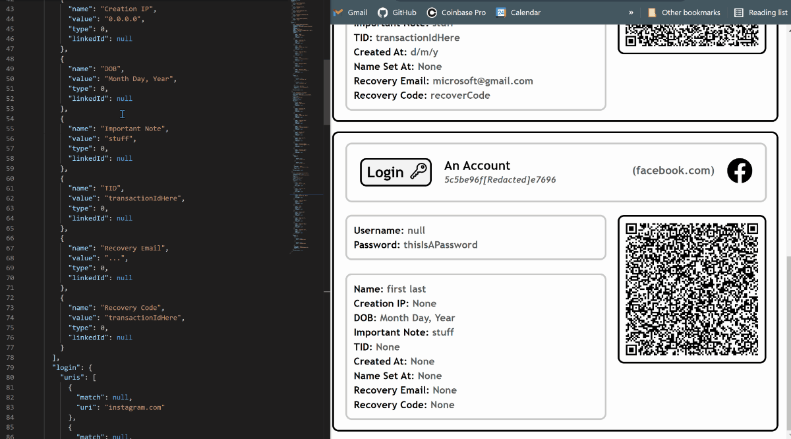

Current Projects

A discord bot which utilises William Whitaker's Words<\a>, a popular latin vocab translator able to determine verb conjugation, noun declension, and more, to translate Latin vocab. To maintain a high level of simplicity, this bot ONLY works via direct messages, and has no prefix or commands. Rather, to use the bot all one must do is DM it a singular latin or english word. Feel free to invite this bot to a server, and then message it vocab words directy.

Bitwarden, a popular open source and free password manager, does a great job of securely storing passwords and other personal data in their cloud, well encrypted and easily accessible. However, their option to export your vault (to maintain a local/physical backup) is to export it as an organized json file, leaving your data in a very human-unfriendly format. While the json format is great for interpreting the data as a machine, I wanted to make a program to convert it to a more human readable html file, allowing one to print the backup onto physical paper. In addition, I have integrated automatic favicon/icon fetching, qr code generation (qr codes which contain data about the items in one's bitwarden vault), databreach checks (using the haveibeenpwned.com api) and more.
While still a work in progress, recently I have been working on a tool to automatically back up one's Google Photos library to a hard drive, using the Google Photos API. Though other tools of the sort exist already, my goal is to make a fully async (with asyncio) tool, to concurrently download many files at once on a single thread — ideal for Raspberry Pis and low end computers.

A github username transfer bot, to move usernames between github accounts without the risk of them being claimed whilst publically avalible. The bot is able to auth the github account, verify with an email OTP, and then spam requests to change to the desired username while the user frees up the username.

In a way a proof of concept, this is a program to scrape the cloudfare protected website, NameMC, a minecraft-social-media site. NameMC uses advanced cloudfare anti-scraping, making it very hard to pull content from their website. To get the droptime, search count, and other information about given minecraft usernames, however, the use of namemc is vital, as NameMc has cached almost every username, and is able to check to see when people change their usernames. Additionally, when a 'sniping' (autoclaiming) service 'snipes' a username, generally they send out an informative embed with information about the 'snipe,' including information pulled from NameMc. While not the first NameMc api, I've created the only open source api for scraping NameMc data. The api uses a bypass which I have found, allowing discord to pull the information instead of a direct request. Discord, a popular chatting platform, is able to auto-generate embed previews, with information from namemc, regardless of Namemc's harsh cloudfare protection.


An ongoing project of mine has been developing systems to autoclaim minecraft usernames at the exact milisecond they drop. When you change your username for Minecraft, the name becomes avalible to the public after 37 days, a time which is publically known. I have coded a queue system to automatically prepare and auth minecraft accounts on various servers, briefly before the droptime of the name, and then automatically send requests to claim the name at the exact time of drop. While many names are 'sniped' by a plethora of other sniping organizations, I have obtained many decent usernames nonetheless, and have turned the project into a business, selling the accounts with valued usernames on them. Worth noting that while closed source, I have coded a fully functional async api with aiohttp, documented to openAPI standards, for managing queued names.
With the acquisition of techy.cc for a personal email, I learned enough html/css to code a basic website to display my contacts and current/past 'techy' projects.